欢迎来到新加坡浙江大学校友会
新加坡浙江大学校友会成立于2000年，致力于加强校友之间的联系，提供丰富的社交和职业发展机会。

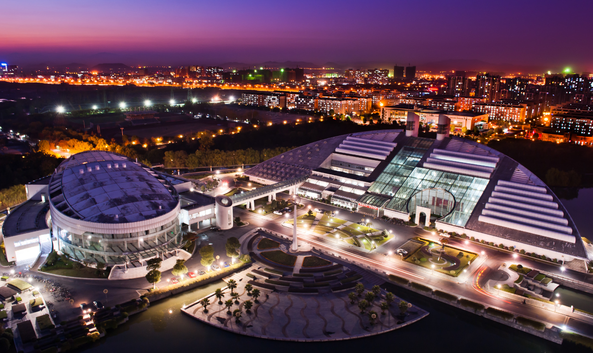
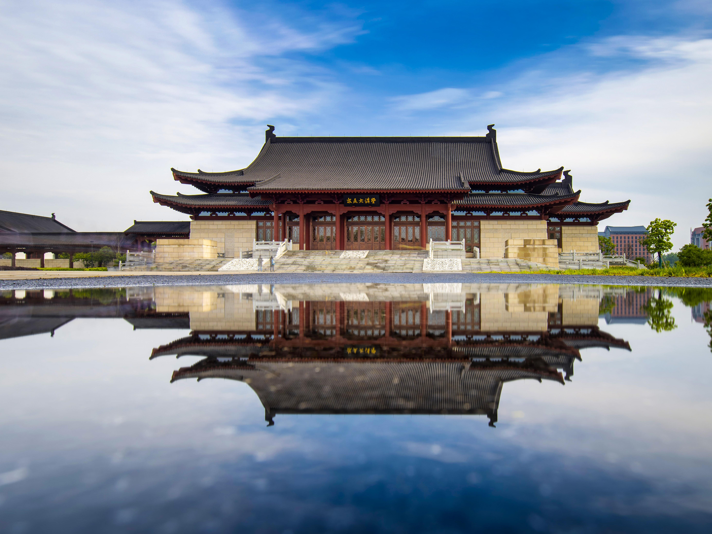
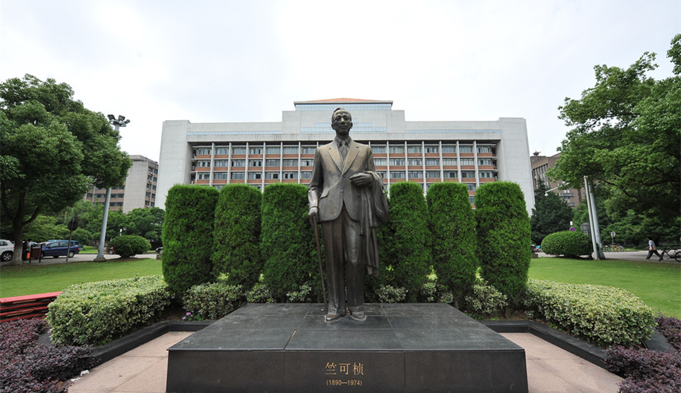
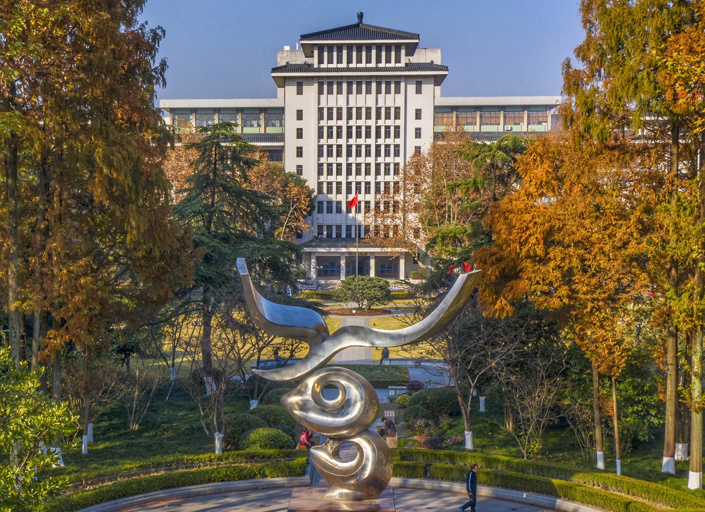
新加坡浙江大学校友会成立于2000年，致力于加强校友之间的联系，提供丰富的社交和职业发展机会。




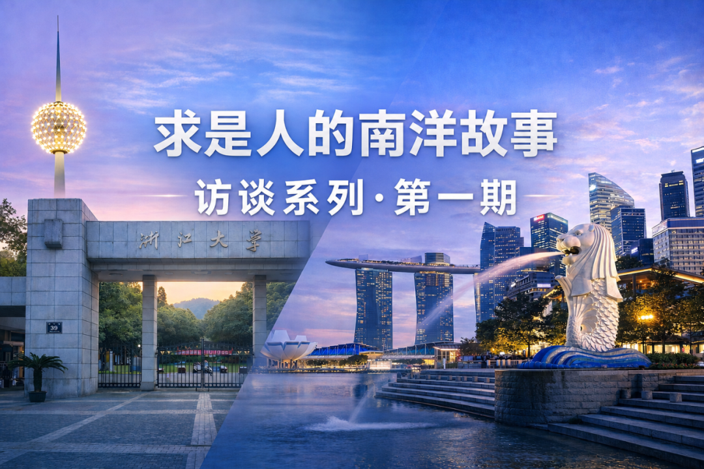
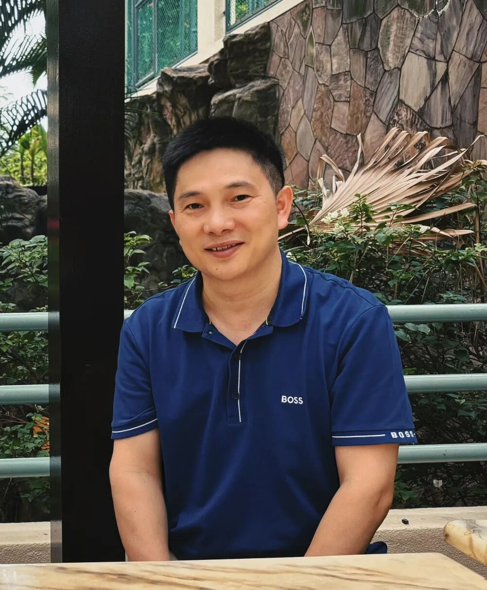
仇元福，浙江大学机械系95级校友，南洋理工大学博士，浙江大学新加坡校友会前任会长。毕业后先后任职于AUTODESK、惠普实验室、新加坡电信等国际企业，长期从事用户体验（UX）、产品创新及数字化转型工作，目前为企业管理者及创业者。
从机械工程到用户体验，从工程师到创业者，从互联网时代走到人工智能时代，仇元福学长的职业发展轨迹看似跨越多个领域，但背后始终贯穿着同一条主线——理解人的需求，并利用技术创造价值。
本期《南洋校友访谈录》，让我们一起走近仇元福学长，听听他的成长故事与职业思考。
我是浙江大学机械系95级学生，1999年本科毕业。毕业之后，我留校工作了一年，在学校设备处负责IT和设备采购相关工作，后来又回到浙大攻读工业工程硕士，当时主要研究供应链管理和电子商务。
现在回头看，我的学习经历其实跨越了几个不同领域：从机械工程到工业工程，再到后来进入用户体验研究，看起来好像每一步都不太一样，但当时并没有刻意规划所谓的“跨界发展”，更多是跟着自己的兴趣以及时代的发展一步一步往前走。
1990年代末，中国互联网刚刚起步，电子商务还是非常新的概念。那个时候我就开始对技术如何改变商业、改变社会产生兴趣。虽然自己学的是机械工程，但已经能够感受到数字化时代正在到来。后来回想，其实很多事情早已埋下伏笔，只是在当时，我们并不知道未来会走向哪里。
2003年是一个很特殊的年份。那一年正好是SARS时期，很多同学都在面临毕业后的选择：找工作、继续深造，或者出国留学。我当时也在思考自己的下一步。说起来很现实，当时南洋理工大学提供的奖学金甚至比我的工资还高（笑）。所以我想，与其急着进入职场，不如利用这个机会继续学习，也看看外面的世界。于是我来到新加坡。但真正来到新加坡以后，我发现留学最大的价值并不是获得一个博士学位。
最大的价值是视野的变化。以前在国内的时候，我们更多关注自己身边发生的事情。来到新加坡以后，因为这里汇聚了来自世界各地的人才，你会自然而然地开始关注全球的发展：科技行业正在发生什么变化？不同国家如何推动创新？不同文化背景的人如何思考问题？这些都是我以前接触相对较少的内容。
慢慢地，你会发现自己的关注范围变大了，看问题的维度也变得更加多元。我觉得这种认知层面的变化，对我后来的人生产生了非常大的影响。技术会不断更新，知识也会不断迭代，但一个人的视野和思维方式，会影响他未来几十年的发展。
确实如此。甚至可以说，我一开始是有些抗拒的，因为我原本以为自己会继续做工程或者软件开发相关研究，结果来到新加坡以后，导师给我安排的研究方向是用户体验（User Experience）。
今天大家都知道UX是什么，但在2003年，这还是一个非常新的概念。我第一次看到课程表的时候有点傻眼：里面除了技术课程之外，还有心理学、社会学、人因工程、文化研究等内容。作为一个工科背景出身的人，我当时觉得这些内容和自己过去学习的东西完全不一样。
我甚至认真考虑过换方向，因为我觉得自己更擅长做工程、更擅长写程序，而不是研究人的行为和心理。后来导师和学院领导都来找我聊，他们认为这是一个非常有前景的方向，希望我能够坚持下来。现在回头看，我特别感谢当时的导师，因为如果当时真的换了方向，我的人生轨迹可能完全不同。
这段经历也让我明白一件事：很多重要机会刚出现的时候，看起来并不像机会，甚至会让人觉得不舒服，因为它意味着离开熟悉的领域，进入未知的世界，而成长往往就发生在这样的时刻。
很多人会以为是专业知识，但我觉得最大的收获其实是认知方式的转变。
以前做工程的时候，我习惯从技术出发思考问题：一个功能该怎么实现？一个系统该怎么设计？一个产品该怎么优化？而用户体验研究让我第一次真正从人的角度思考问题：用户为什么需要它？他们真正的需求是什么？他们为什么会这样做？为什么有些技术很先进的产品最终失败了？为什么有些看似简单的产品却能够成功？
刚开始的时候，这种思维方式让我很不适应，因为工程师喜欢确定性，而研究人往往充满不确定性。但慢慢地，我发现真正有价值的创新往往来自于对人的深入理解，而不仅仅是技术突破。后来无论是在AUTODESK、惠普实验室还是新加坡电信工作，这种思维方式一直影响着我。我越来越相信：技术只是工具，理解人才是起点。
很多企业都在谈创新，但创新并不是先有技术，再寻找应用场景。真正成功的创新，往往是先发现人的需求，再用技术去解决问题，这也是用户体验这个领域最吸引我的地方。
刚开始其实并没有这么明确，因为那个时候这个行业还很小。市场上相关人才也不多，很多企业甚至不知道用户体验到底是什么。但随着互联网的发展，我越来越发现，真正优秀的产品往往不是技术最先进的产品，而是最理解用户的产品。为什么有些产品功能很多，却没人愿意用？为什么有些产品看起来简单，却能改变用户行为？这些问题背后其实都与用户体验有关。
后来我先后在AUTODESK、惠普实验室、新加坡电信等企业工作。 虽然行业不同、产品不同，但工作的核心一直没有变，就是如何理解人的需求，并利用技术创造更好的产品和服务。现在回头看，当年进入这个领域算是比较幸运地赶上了行业发展的早期阶段[cite: 1, 2]。但更重要的是，这个行业让我始终保持学习，因为技术在变化，市场在变化，用户也在变化，如果停止学习，很快就会被时代淘汰[cite: 1, 2]。
很多人会觉得，从大公司出来创业，最大的变化是身份：以前是职业经理人，现在是创业者，但我觉得真正的变化其实是责任。在大公司工作的时候，虽然也会面对很多挑战，但通常有比较成熟的组织体系、流程和资源支持。你负责的是某个领域、某个项目，更多是在既定框架内把事情做好。
创业以后完全不一样，你会发现自己需要同时思考很多问题：产品怎么做？客户在哪里？团队怎么搭建？资金如何规划？未来的发展方向是什么？很多问题都没有标准答案，更重要的是，最终都需要你自己做决定。我经常开玩笑说，创业以后身体可能下班了，但脑子很少真正下班。很多时候晚上回到家，或者周末陪家人的时候，脑子里还会不自觉地思考公司的事情。
这种状态其实和我当年读博士有点像。博士阶段做研究的时候，一个问题没有想明白，你会一直思考。创业也是一样，只不过研究的问题变成了市场、客户和团队。当然，创业也让我学到了很多以前在大企业里学不到的东西，比如如何从商业角度看问题。以前做产品时，我更多关注用户需求；创业以后，我不仅要考虑用户需求，还要考虑商业模式、市场竞争和组织发展。因为一家企业只有真正创造价值，才能持续生存，这也是创业最有意思的地方，它会迫使你不断成长。很多能力并不是提前准备好的，而是在解决问题的过程中慢慢培养出来的。
我觉得压力是每个人都会遇到的问题，尤其是在现在这个时代，变化速度越来越快，竞争也越来越激烈。很多年轻人问我如何管理压力，其实我觉得，首先要接受压力本身是正常的：如果你在成长，如果你在承担责任，就一定会有压力。问题不在于有没有压力，而在于如何与压力相处。我年轻的时候也会觉得，只要足够努力，就能够解决所有问题；后来慢慢发现，人不可能一直处于高压状态，如果只会承担压力，不会释放压力，迟早会出现问题。
这些年我越来越重视平衡。我会尽量让自己在晚上七点以后进入比较放松的状态，周末也会有意识地留时间给家人：陪孩子学习、陪家人出门、自己研究做饭，这些看似和工作无关的事情，其实都是非常重要的充电方式。有一次我在小红书上学做菜，折腾了半天，最后做出来的味道其实一般（笑），但那个过程本身让我很放松。很多时候，我们需要的并不是彻底停止思考，而是给自己一个从工作状态切换出来的机会。我觉得现在越来越多人开始关注心理健康，这是非常好的现象，无论是创业者还是职场人士，都需要学会照顾自己的情绪和状态，因为长期发展比短期冲刺更重要。
这是最近几年大家问得最多的问题，几乎每个人都在讨论AI：程序员在讨论AI、设计师在讨论AI、企业管理者也在讨论AI。我认为有一点是非常确定的：AI一定会深刻改变很多行业，这一点已经发生了，而且未来几年还会继续发生。
在我们的工作中，其实已经大量使用AI，例如用户研究：以前做用户访谈，需要花大量时间整理录音、记录内容、分析信息，现在AI可以帮助完成很多基础工作，包括内容整理、信息归纳、模式识别等等，效率提升非常明显。软件开发也是一样，很多程序员以前需要花几个小时完成的工作，现在借助AI工具可能几十分钟就完成了。
从企业角度来说，这当然是一件好事，因为能够提高效率，降低成本，但与此同时，我觉得很多人容易陷入另一个误区，就是过于关注技术本身。如果回顾过去两百年的历史，会发现每一次技术革命出现的时候，人们都会产类似的焦虑，工业革命如此。互联网时代如此，移动互联网时代也是如此，今天轮到了AI。
但有一个问题其实始终没有变，那就是：人需要什么？人类的需求是什么？我们希望更高效地工作、希望获得更好的服务、希望与人建立连接、希望实现自我价值，这些需求在过去几千年里并没有发生本质变化。所以我一直认为，真正值得关注的并不是AI本身，而是AI如何帮助我们更好地满足这些需求。技术永远只是工具，理解人才是核心。这一点在二十年前如此，在今天依然如此。
从某种意义上说，我这些年一直在做同一件事情，无论是互联网时代还是AI时代，本质上都是在研究人：研究人的行为、研究人的需求、研究如何利用技术创造更好的体验。所以我经常和年轻同事说，不要只盯着技术变化，更重要的是理解技术背后服务的人，如果能够抓住这一点，无论未来出现什么新技术，你都能够找到自己的位置。
如果只说一个关键词，我会选择：开放。
因为回顾自己的成长经历，我发现很多重要机会都来自于意料之外。我当年并没有计划进入用户体验行业。也没有计划未来会创业。很多事情都是在过程中慢慢发生的，如果当初我坚持认为自己只能做工程师，拒绝接触新的领域，那么后面的很多经历都不会发生。所以我觉得年轻的时候，不要太早给自己设限，保持开放，愿意尝试新的方向、愿意接受新的挑战、愿意和不同背景的人交流，这些都非常重要。
第二个关键词是学习。
现在是一个变化非常快的时代。过去可能学会一项技能可以用很多年，现在很多知识几年甚至几个月就会发生变化，所以持续学习已经不是一种优势，而是一种基本能力。我特别欣赏那些始终保持好奇心的人，无论年龄多大，依然愿意学习新东西，这样的人通常能够走得更远。
第三个关键词是内驱力。
我觉得真正优秀的人，往往不是因为有人逼着他们成长，而是因为他们自己希望变得更好，这种内在动力会帮助一个人穿越困难时期。无论是读书、工作还是创业，都会遇到挑战，如果只是依靠外部激励，很难坚持太久，但如果你内心真的有追求，就会不断推动自己向前。
最后，我还想补充一点：现在很多年轻人都很优秀，也很努力，但不要忽略自己的身心健康。事业很重要，成长很重要，但幸福同样重要，希望大家在追求目标的同时，也能享受成长的过程。
从浙江大学机械系学生，到南洋理工大学博士；从用户体验研究者，到企业管理者和创业者；从互联网时代走到人工智能时代，仇元福学长的职业生涯经历了许多变化，但在这些变化背后，有一些东西始终没有改变：对未知的好奇、对学习的热情、对人的关注。
回顾二十多年的成长历程，他最想传递给年轻校友的，并不是某个具体的职业选择，而是一种面对变化的态度。保持开放，持续学习，相信长期积累的力量。因为很多重要机会，往往藏在意料之外，而真正决定一个人能够走多远的，往往不是他最初选择了什么，而是在面对变化时，是否愿意不断成长。
（浙江大学新加坡校友会 秘书处 采访供稿）
新加坡讯 2026年5月28日晚，由浙江大学新加坡校友会主办的“炉边夜话”沙龙活动在新加坡顺利举行。本次活动特别邀请到人工智能领域的资深专家、浙大优秀校友沈鑫博士作为主讲嘉宾，为大家带来了一场关于人工智能技术与教育行业融合发展的深度主题分享。
来自各行各业的二十余位在星浙大校友及特邀嘉宾齐聚一堂。活动现场气氛热烈，校友们在温馨的自我介绍与互动中拉开帷幕，并结合各自的专业背景进行了广泛的交流与引申。
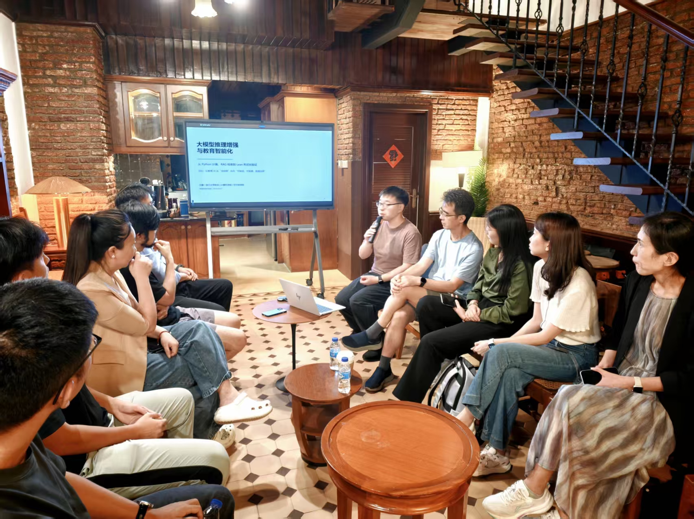
分享期间，沈鑫博士结合自身丰富的行业实践经验，深入浅出地剖析了当前大模型在垂直教育领域应用中的核心逻辑、行业痛点及未来发展趋势。他指出，优秀的智能化产品应致力于更科学、可信的逻辑引导与用户体验，服务于长远的人才培养与技术迭代。
在问答与互动环节中，现场校友和嘉宾反响热烈，围绕技术落地、行业转型、商业闭环以及具身智能等前沿热点议题展开了广泛而深入的思辨与探讨。
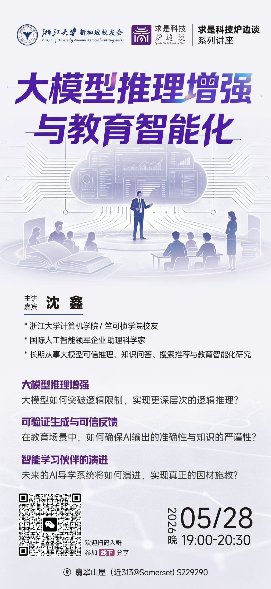
夜色渐深，校友们在会后的自由交流热情依然不减。大家纷纷表示，本次炉边夜话活动不仅拓宽了行业视野，更搭建了难得的跨界交流平台。
浙江大学新加坡校友会今后将继续推出更多高质量的行业沙龙，搭建智慧碰撞的桥梁，助力在星校友共同成长。感谢广大校友对本次活动的大力支持！
（浙江大学新加坡校友会 秘书处 供稿）

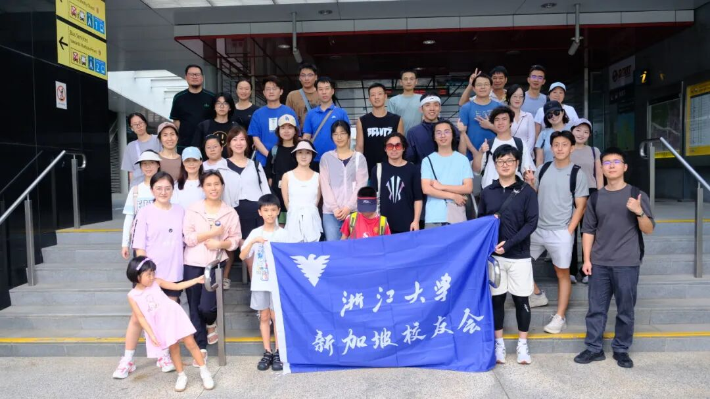
“大不自多，海纳江河”，母校 129 周年华诞将至，浙大新加坡校友会特别策划校庆主题毅行活动，以滨海之行共贺母校华章。
本次毅行路线精心串联起新加坡南部海岸的经典景致，一路风光如画，底蕴丰厚。队伍从 Labrador Park 地铁站出发，即刻踏入拉布拉多自然保护区的范围。沿着滨海木栈道前行，一侧是波光粼粼的海面，一侧是枝叶繁茂的绿植，平整的栈道蜿蜒向海，既保留着自然野趣，又能让人从容欣赏海岸风光，脚下的每一步都伴着涛声与鸟鸣，格外惬意。
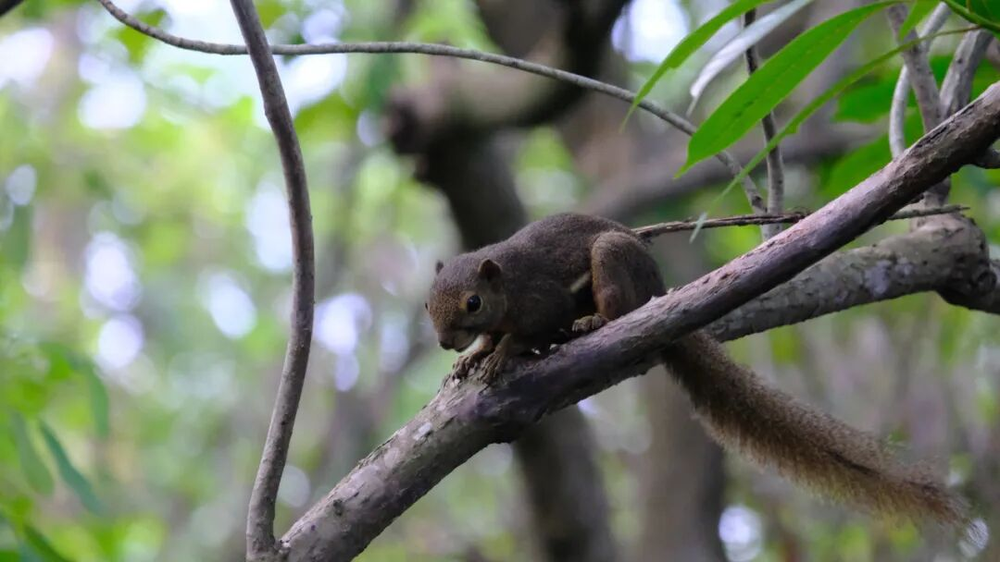
行至中段，便进入红树林区域。这片生长于海岸潮间带的生态林地，是新加坡重要的自然生态屏障。盘根错节的红树根系牢牢扎根于滩涂，繁茂的枝叶交织成荫，不仅为众多鸟类、蟹类等生物提供了栖息家园，也展现着顽强的生命力与和谐的生态之美。穿行其间，清新的空气扑面而来，大家在感受自然生机的同时，也更能体会到 “启真厚德” 所蕴含的对自然、对万物的敬畏与探索之心。
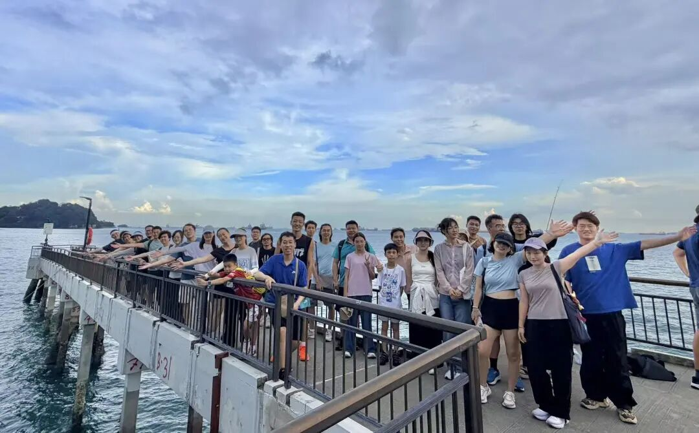
继续向前，抵达龙牙门（Dragon‘s Teeth Gate），这里是新加坡本岛的最南端，也是一处承载着悠久历史的地标。古时，这里是海上航行的重要标识，两块高耸的岩石形似龙牙，见证着新加坡作为海上交通要道的千年变迁，也象征着开拓与连接的精神。旁边矗立的红色灯塔，红白相间的塔身醒目而温暖，百年来静静伫立，为往来船只指引方向，如同母校的教诲，始终是校友们前前行路上的精神灯塔。
随后，路线延伸至吉宝湾（Keppel Bay）。这里集自然美景与现代活力于一体，平静的港湾内停泊着各式游艇，沿岸的建筑与绿地相映成趣，碧海、蓝天、白帆与城市景观相融，勾勒出新加坡滨海生活的美好图景。大家漫步湾畔，眼前的开阔景致，也恰如母校 “海纳江河” 的胸怀，包容万象，气象万千。
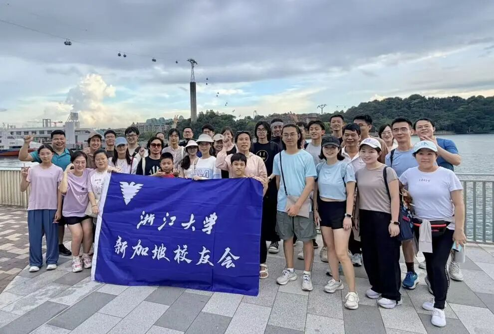
队伍最终抵达 VivoCity，这座新加坡知名的滨海地标，既是行程的终点，也象征着一段新的开始。全程数公里的行走中，校友们结伴而行，从最初的轻松畅谈，到途中彼此鼓励、相互帮扶，昔日在求是园的同窗情谊，在异国的海岸线上变得更加深厚。大家分享着求学时光的难忘故事，交流着在新加坡的工作与生活感悟，也聊起母校近年来的发展成就，言语间满是自豪与牵挂。
校友们于狮城之南远眺碧波万顷，重温求是精神，于海风轻拂间畅叙校友情谊，以脚步丈量热土，用毅行致敬青春！
亲爱的浙大校友们：
在狮城的晨光里，在椰风蕉雨的南洋大地上，一代又一代浙大人留下了属于他们的奋斗足迹。他们或许早在上世纪中叶就远渡重洋，来到新加坡及周边国家，在异乡扎根、拼搏、成长。他们在南洋求学、创业、工作、生活，将“求是精神”融入到异国的土壤中。
他们的故事，是浙大历史中珍贵的一页，也是我们共同的精神财富。
为了记录和传承这份宝贵的记忆，浙江大学新加坡校友会正式启动主题访谈活动 —— “求是人的南洋故事”。
本次活动将通过访谈、口述记录等方式，整理和呈现浙大校友在南洋地区的真实经历。我们特别希望聚焦早年来到南洋发展的老校友，为这一代“求是人”留下属于他们的时代回响。
现面向全体校友征集线索，如果您身边有以下特征的校友，欢迎向我们推荐：
* 所有信息仅用于本次校友故事记录活动。我们将严格保管，并在联系本人确认后再开展采访工作。
如您愿意推荐或提供线索，欢迎通过以下方式联系我们：
微信：qiqiy1777（柒柒）
每一位老校友，都是一部行走的校史。他们的青春、选择、坚持与成长，值得被倾听、被记录、被传承。
让我们一起寻找和记录南洋的求是足迹，让老一辈浙大人的故事被更多人听见，也让“求是精神”在时代中继续发光。
浙江大学新加坡校友会理事会
2026年4月21日
龙腾四海贺新春，求是同心聚狮城 —— 浙江大学新加坡校友会新春团拜晚宴圆满落幕
随着乙巳蛇年新春的钟声渐渐远去，我们满怀喜悦地回顾了浙江大学新加坡校友会举办的新春团拜晚宴。这场温馨而团圆的家宴不仅让校友们暂时放下了繁忙的工作，更让我们在欢声笑语中重温了求是园的青葱岁月，共同分享了在狮城的浙里情长。
活动于17:00正式开始，首先举行的是浙大新加坡校友会会员大会。在大会上，校友们回顾了过去一年的成就，展望了新的一年的计划，并进行了深入的交流 and 讨论。18:30，随着团拜晚宴的开始，现场气氛达到了高潮。校友们身着新春传统服饰或正装，红金配色的着装为晚宴增添了喜庆的氛围。
晚宴结束后，校友们纷纷表示这是一次难忘的聚会。通过这次活动，不仅加强了校友之间的联系，也让大家在异国他乡感受到了家的温暖。许多校友在社交媒体上分享了他们的照片 and 感受，表达了对这次活动的赞赏和对组织者表达谢意。
浙江大学新加坡校友会新春团拜晚宴的成功举办，离不开每一位校友的支持 and 参与。我们期待在未来的日子里，能够继续举办更多这样的活动，让校友们在忙碌的生活中找到归属感，共同庆祝每一个重要的时刻。
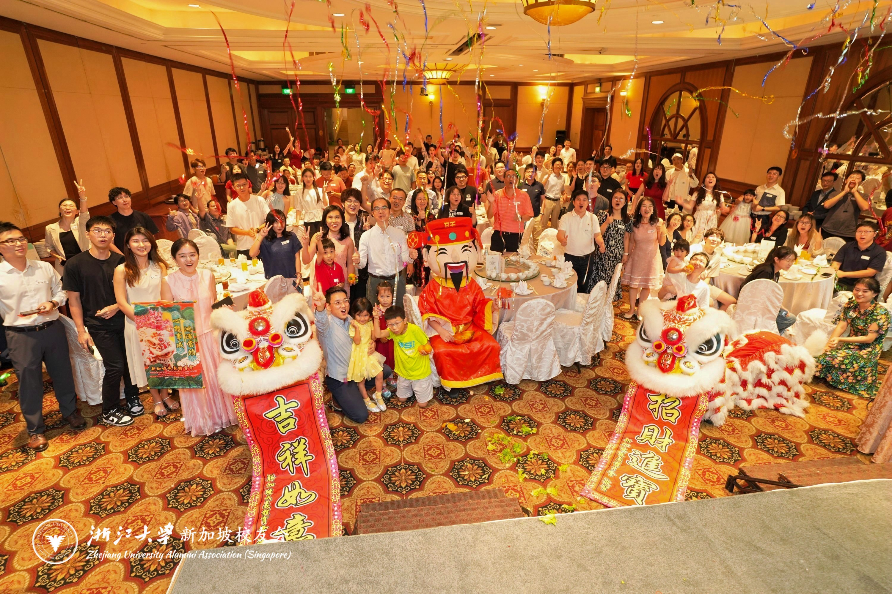
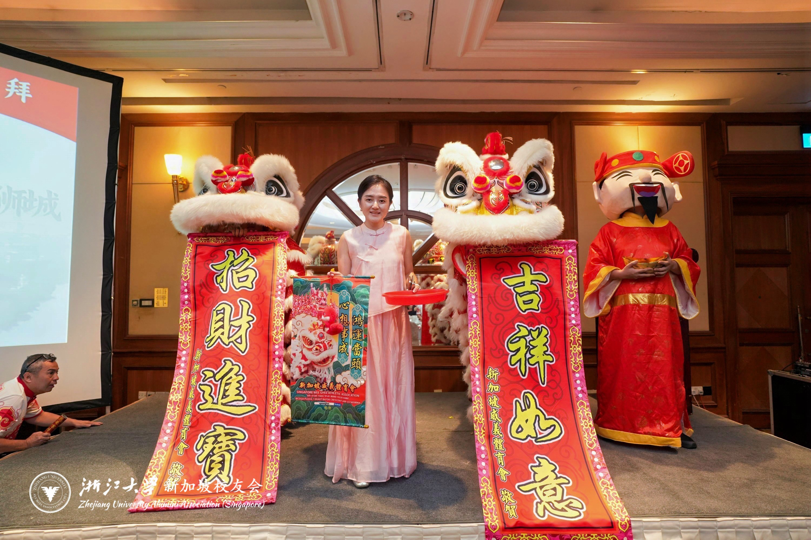
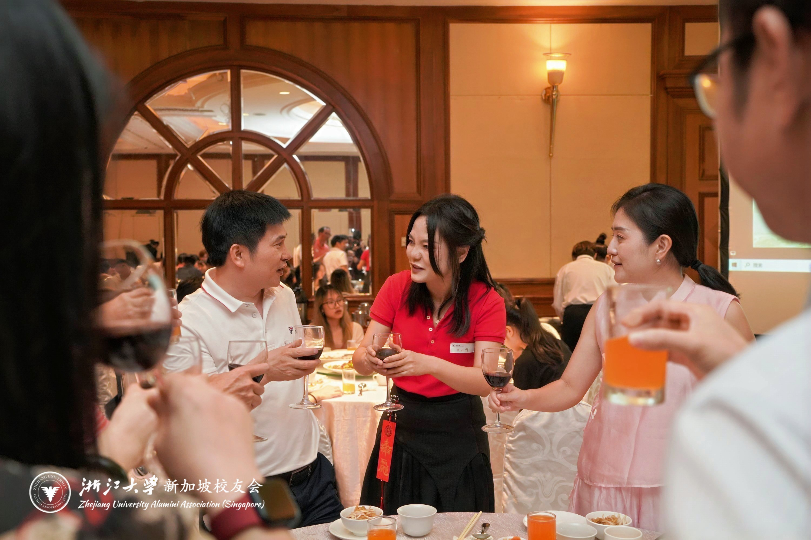
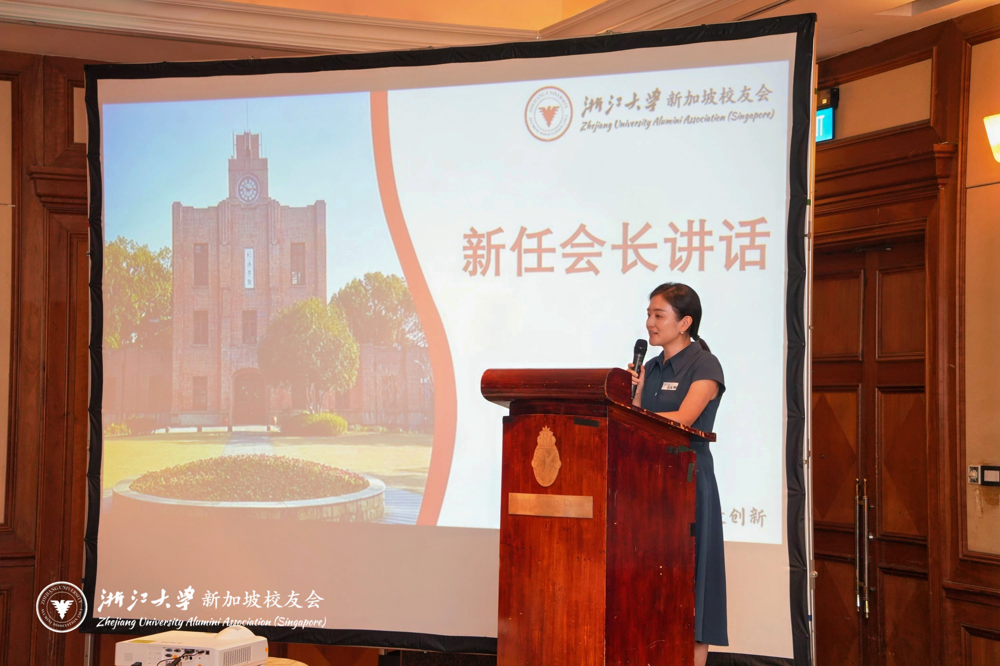
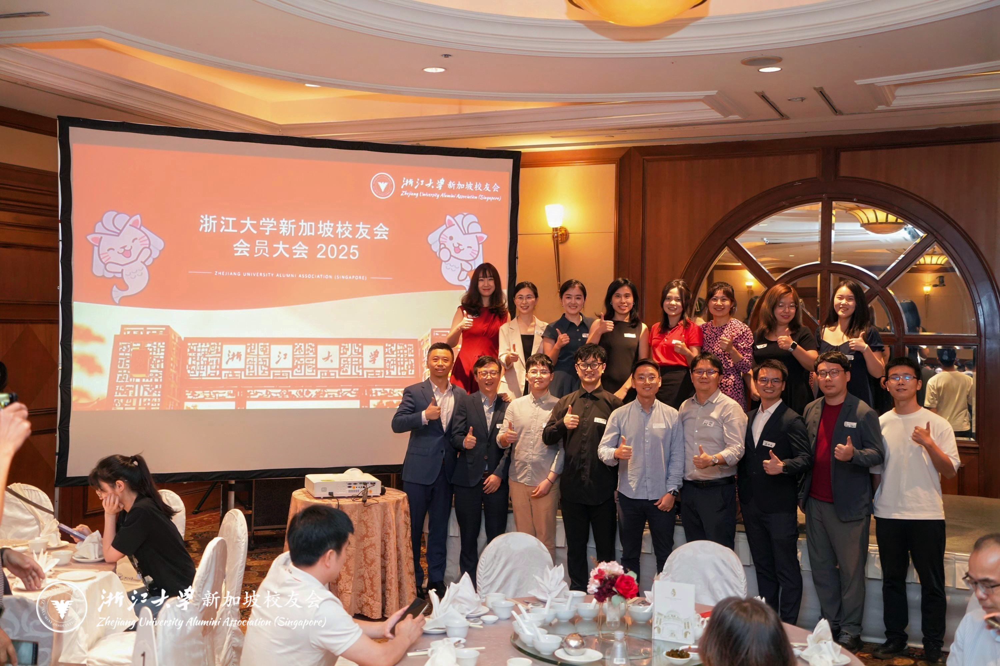
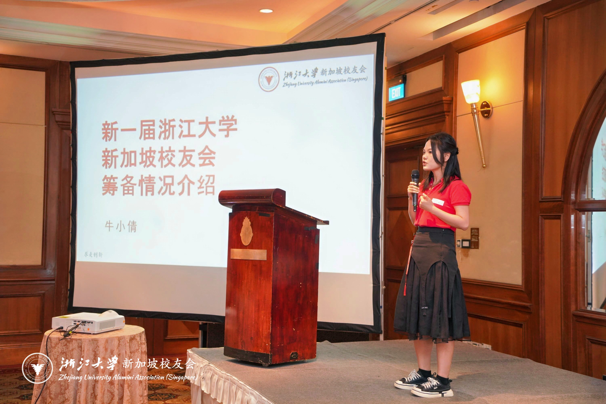
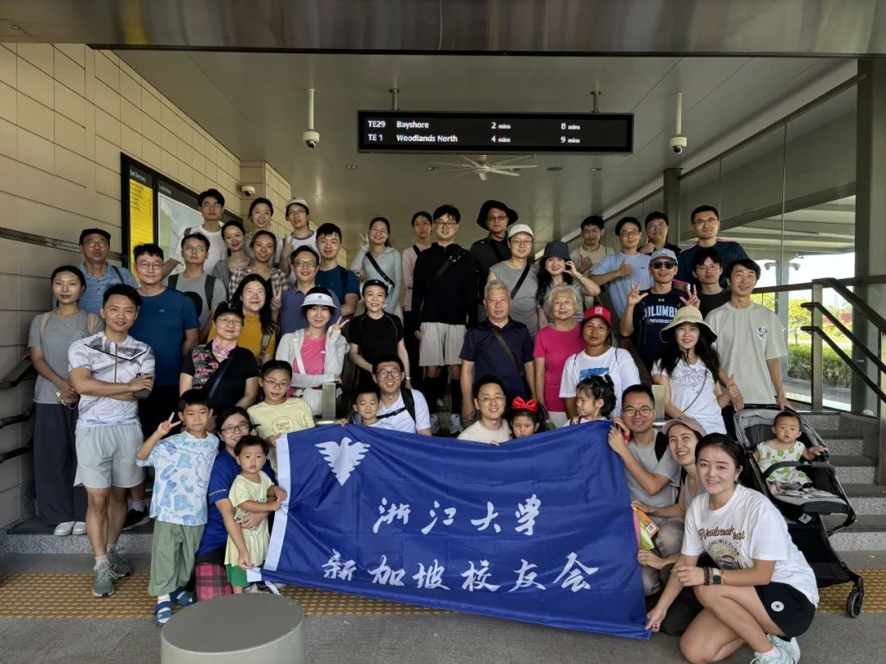
读书会、AI 行业大咖分享会等活动敬请关注！
浙江大学新加坡校友会（Zhejiang University Alumni Association Singapore, 简称ZUAAS）于2000年在新加坡内政部注册并正式成立，是由在新加坡工作的和学习的浙江大学校友自愿组成的非营利性联合组织。校友会以“联络校友、凝聚力量、促进交流、共创未来”为宗旨，致力于为在新加坡的浙大校友搭建一个信息交流、资源共享和相互支持的平台。
自成立以来，校友会通过丰富多样的活动和项目不断加强校友之间的联系，成为促进校友职业发展、推动中新合作交流的重要纽带。校友会覆盖数千名在新加坡的浙大校友，注册校友人数已达数百人，校友们在学术、科技、工程和商界等领域展现了卓越的专业实力，成为新加坡多元化社会中的重要力量。
校友会每年举办大型年度聚会，并组织包括学术讲座、公益项目、兴趣小组和联谊活动在内的多种活动。品牌项目“薪火相传”公益系列活动，与新加坡中华总商会青年企业家网络（YEN）合作多年，受到社会各界的广泛关注。
校友会的组织架构包括主席团、财务组、秘书组、外联部、会员组、信息组、新闻组、联络组、以及项目组，各职能部门由理事会负责管理 and 运行。同时，资深校友组成的顾问团为校友会的战略发展提供支持。校友会也欢迎更多热心校友加入，共同为组织的持续发展贡献力量。
展望未来，浙江大学新加坡校友会将继续秉持开放、合作、共享的理念，通过更加多元的活动和项目，为校友们提供更多交流与发展的机会，并为中新关系的进一步深化贡献力量。
（更新于2026年1月4日）
| 组别 | 人员信息 |
|---|---|
| 会长 | 李阳 |
| 副会长 | 曹亮 |
| 财务组 | 组长：虞肖鹏 副组长：鞠安娜 |
| 秘书组 | 组长：何咪 副组长：曹亮（兼） 组员：王婷 |
| 会员组 | 组长：孟繁旭 副组长：王一凡、薛雪 组员：杨奇奇 |
| 信息组 | 组长：张昊 副组长：梁帅龙 |
| 新闻组 | 组长：胡元平 组员：孙雨禾 |
| 联络组 | 组长：唐资仪 组员：史皓淼 |
| 项目类 | |
| 科技组 | 组长：张昊（兼） 副组长：梁帅龙（兼） |
| 读书会 | 组长：梁帅龙（兼） 副组长：方洪勇 |
| 户外与运动组 | 组员：王意存、冯博文 |
会员资格：向新加坡合法居民开放（包括新加坡公民、新加坡永久居民以及持有一年以上长期有效签证的人），且需满足拥有浙大正式学位或教职经历。
会员费用（待会员大会正式审议）：已工作校友费用为 50新/年，学生校友费用为 20新/年，会员资格每年更新。
有任何疑问，欢迎通过官方电邮 contact@zju.sg 联系我们。
我们欢迎企业和个人赞助校友活动，同时也欢迎校友捐赠支持校友会各项活动。为了方便校友们的支持，我们特别说明以下几点：
有意向的校友可通过电邮 finance@zju.sg 与我们取得联系。